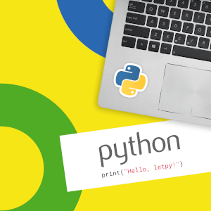

Синтаксис языка Python

Практический Python 3 для начинающих
Теория и практика. Быстрая проверка задач и подсказки к ошибкам на русском языке. Работает в любом современном браузере.
НАЧАТЬ БЕСПЛАТНОLETPY.COM
Синтаксис языка Python, как и сам язык, очень прост.
Синтаксис
- Конец строки является концом инструкции (точка с запятой не требуется).
- Вложенные инструкции объединяются в блоки по величине отступов. Отступ может быть любым, главное, чтобы в пределах одного вложенного блока отступ был одинаков. И про читаемость кода не забывайте. Отступ в 1 пробел, к примеру, не лучшее решение. Используйте 4 пробела (или знак табуляции, на худой конец).
- Вложенные инструкции в Python записываются в соответствии с одним и тем же шаблоном, когда основная инструкция завершается двоеточием, вслед за которым располагается вложенный блок кода, обычно с отступом под строкой основной инструкции.
Основная инструкция:
Вложенный блок инструкций
Несколько специальных случаев
- Иногда возможно записать несколько инструкций в одной строке, разделяя их точкой с запятой:
a = 1; b = 2; print(a, b)
Но не делайте это слишком часто! Помните об удобочитаемости. А лучше вообще так не делайте.
- Допустимо записывать одну инструкцию в нескольких строках. Достаточно ее заключить в пару круглых, квадратных или фигурных скобок:
if (a == 1 and b == 2 and
c == 3 and d == 4): # Не забываем про двоеточие
print('spam' * 3)
- Тело составной инструкции может располагаться в той же строке, что и тело основной, если тело составной инструкции не содержит составных инструкций. Ну я думаю, вы поняли :). Давайте лучше пример приведу:
if x > y: print(x)
Полное понимание синтаксиса, конечно, приходит с опытом, поэтому я советую вам заглянуть в рубрику "Примеры программ".
Также советую прочитать PEP 8 — руководство по написанию кода на Python и Документирование кода в Python. PEP 257.